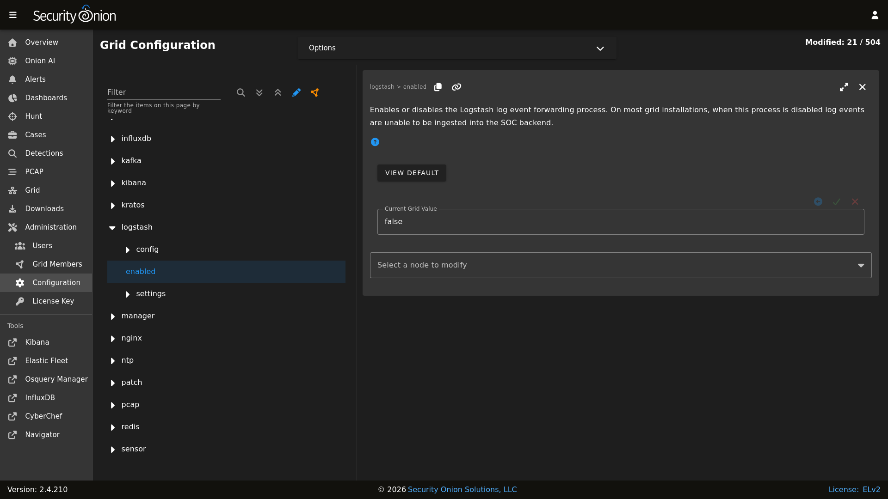

Logstash
From https://www.elastic.co/products/logstash :
Logstash is a free and open server-side data processing pipeline that ingests data from a multitude of sources, transforms it, and then sends it to your favorite “stash.”
When Security Onion is running in Standalone mode or in a full distributed deployment, Logstash transports unparsed logs to Elasticsearch which then parses and stores those logs. It’s important to note that Logstash does NOT run when Security Onion is configured for Import or Eval mode. You can read more about that in the Architecture section.
Configuration
You can configure Logstash by going to Administration –> Configuration –> logstash.
{kind=link}

ls_pipeline_batch_size
The maximum number of events an individual worker thread will collect from inputs before attempting to execute its filters and outputs. Larger batch sizes are generally more efficient, but come at the cost of increased memory overhead. This is set to 125 by default.
ls_pipeline_workers
The number of workers that will, in parallel, execute the filter and output stages of the pipeline. If you find that events are backing up, or that the CPU is not saturated, consider increasing this number to better utilize machine processing power. By default this value is set to the number of cores in the system.
For more information, please see https://www.elastic.co/guide/en/logstash/current/logstash-settings-file.html.
lsheap
If total available memory is 8GB or greater, Setup sets the Logstash heap size to 25% of available memory, but no greater than 4GB.
For more information, please see https://www.elastic.co/guide/en/elasticsearch/guide/current/heap-sizing.html#compressed_oops.
You may need to adjust the value depending on your system’s performance. The changes will be applied the next time the minion checks in. You can force it to happen immediately by running sudo salt-call state.apply logstash on the actual node or by running sudo salt $SENSORNAME_$ROLE state.apply logstash on the manager node.
Parsing
Logstash does not parse logs in Security Onion, so modifying existing parsers or adding new parsers should be done via Elasticsearch.
Forwarding Events to an External Destination
Please keep in mind that we don’t provide free support for third party systems, so this section will be just a brief introduction to how you would send syslog to external syslog collectors. If you need commercial support, please see https://www.securityonionsolutions.com.
Original Event Forwarding
To forward events to an external destination with minimal modifications to the original event, create a new custom configuration file on the manager in /opt/so/saltstack/local/salt/logstash/pipelines/config/custom/ for the applicable output. We recommend using either the http, tcp, udp, or syslog output plugin. At this time we only support the default bundled Logstash output plugins.
For example, to forward all Zeek events from the dns dataset, we could use a configuration like the following:
output {
if [event][module] == "zeek" and [pipeline] == "dns" {
udp {
id => "cloned_events_out"
host => "192.168.x.x"
port => 1001
codec => "json_lines"
}
}
}
Warning
When using the tcp output plugin, if the destination host or port is down, it will cause the Logstash pipeline to be blocked. To avoid this, try using the other output options or consider having forwarded logs use a separate Logstash pipeline.
Also keep in mind that when forwarding logs from the manager, some fields may not be set as expected since the events have not yet been processed by the Ingest Node configuration.
In Security Onion Console (SOC), navigate to Administration –> Configuration. At the top of the page, click the Options menu and then enable the Show advanced settings option. Then navigate to logstash –> defined_pipelines –> manager and append the name of your newly created file to the list of config files used for the manager pipeline:
custom/myfile.conf
The configuration will be applied at the next 15-minute interval or you can apply it immediately by clicking the SYNCHRONIZE GRID button under the Options menu.
You can monitor events flowing through the output by running the following command on the manager:
curl -s localhost:9600/_node/stats | jq .pipelines.manager
Modified Event Forwarding
To forward events to an external destination AFTER they have traversed the Logstash pipelines (NOT ingest node pipelines), perform the same steps as above but instead of adding the reference for your Logstash output to the manager pipeline add it to search pipeline instead. The configuration will be applied at the next 15-minute interval or you can apply it immediately by clicking the SYNCHRONIZE GRID button under the Options menu.
You can monitor events flowing through the output by running the following command on the search nodes:
curl -s localhost:9600/_node/stats | jq .pipelines.search
Please keep in mind that events will be forwarded from all applicable search nodes, as opposed to just the manager.
Queue
Memory-backed
From https://www.elastic.co/guide/en/logstash/current/persistent-queues.html:
By default, Logstash uses in-memory bounded queues between pipeline stages (inputs → pipeline workers) to buffer events. The size of these in-memory queues is fixed and not configurable.
Persistent
If you experience adverse effects using the default memory-backed queue, you might consider a disk-based persistent queue. From https://www.elastic.co/guide/en/logstash/current/persistent-queues.html:
In order to protect against data loss during abnormal termination, Logstash has a persistent queue feature which will store the message queue on disk. Persistent queues provide durability of data within Logstash.
Queue Max Bytes
The total capacity of the queue in number of bytes. Make sure the capacity of your disk drive is greater than the value you specify here. If both queue.max_events and queue.max_bytes are specified, Logstash uses whichever criteria is reached first.
Dead Letter Queue
If you want to check for dropped events, you can enable the dead letter queue. This will write all records that are not able to make it into Elasticsearch into a sequentially-numbered file (for each start/restart of Logstash).
This can be achieved by adding the following to the Logstash configuration:
dead_letter_queue.enable: true
and restarting Logstash:
sudo so-logstash-restart
The dead letter queue files are located in /nsm/logstash/dead_letter_queue/main/.
Redis
When using search nodes, Logstash on the manager node outputs to Redis (which also runs on the manager node). Redis queues events from the Logstash output (on the manager node) and the Logstash input on the search node(s) pull(s) from Redis. If you notice new events aren’t making it into Elasticsearch, you may want to first check Logstash on the manager node and then the Redis queue.
Diagnostic Logging
The Logstash log file is located at /opt/so/log/logstash/logstash.log. Log file settings can be adjusted in /opt/so/conf/logstash/etc/log4j2.properties. By default, logs are set to rollover daily and purged after 7 days. Depending on what you’re looking for, you may also need to look at the Docker logs for the container:
sudo docker logs so-logstash
Errors
Read-Only
[INFO ][logstash.outputs.elasticsearch] retrying failed action with response code: 403 ({"type"=>"cluster_block_exception", "reason"=>"blocked by: [FORBIDDEN/12/index read-only / allow delete (api)];"})
This error is usually caused by the cluster.routing.allocation.disk.watermark (low,high) being exceeded.
You may want to check /opt/so/log/elasticsearch/<hostname>.log to see specifically which indices have been marked as read-only.
Additionally, you can run the following command to allow writing to the affected indices:
curl -k -XPUT -H 'Content-Type: application/json' https://localhost:9200/<your_index>/_settings -d'{ "index.blocks.read_only": false }'
More Information
Note
For more information about Logstash, please see https://www.elastic.co/products/logstash.